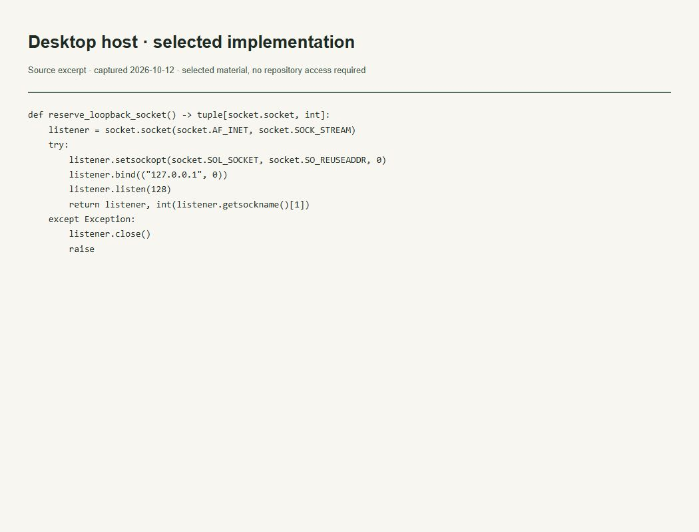

Evidências do trabalho
Desktop e engenharia governada
O que esta evidência demonstra
Mostra um listener local reservado pelo Desktop Host e sua limpeza em caso de falha.

Ler transcrição literal acessível
def reserve_loopback_socket() -> tuple[socket.socket, int]:
listener = socket.socket(socket.AF_INET, socket.SOCK_STREAM)
try:
listener.setsockopt(socket.SOL_SOCKET, socket.SO_REUSEADDR, 0)
listener.bind(("127.0.0.1", 0))
listener.listen(128)
return listener, int(listener.getsockname()[1])
except Exception:
listener.close()
raiseContexto e limites
Trecho de código, não screenshot da aplicação executando nem teste operacional.
A imagem é uma captura local de um recorte literal do arquivo verificado. Não é captura da interface do GitHub nem da aplicação em execução. O trecho permanece no idioma original.